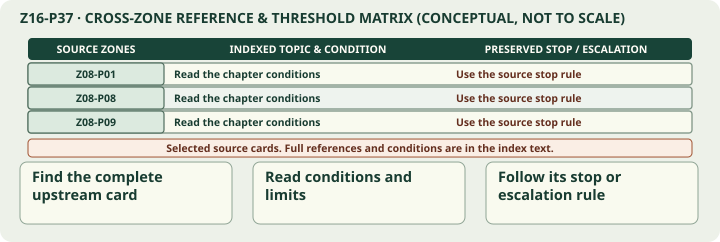

Z16-P37 · Field reference atlas · New manuscript
Minnesota Bedrock Provinces, Glacial Drift and Karst Cross-Reference
Link Z08 regional geology provinces with Z11 compass interference, Z04 karst spring contamination, and bluff rockfall hazards.
When it applies · Field orientation across Minnesota Canadian Shield, Rift, Driftless karst, and glacial plains.
Equipment · Full offline reader (Z08, Z11, Z04), primary zone cards, and local emergency and agency references.

Actions
- Map surficial glacial drift separately from underlying Precambrian Shield, Midcontinent Rift basalt, and southeastern Paleozoic limestone, sandstone strata using MGS references (Z08-P01, Z08-P07..P10).[A04, R01, R02]
- Connect geology directly to operational hazards: northern iron formations deflect compass needles (Z08-P20, Z11-P29); southeastern karst fissures transmit rapid surface contamination into visually clear springs (Z08-P09, Z04-P03).[A04, R16, R20, W03]
- Keep clear of unstable drift gravel cuts, undercut riverbanks, and thawing Paleozoic bluff talus aprons (Z08-P09, Z08-P32).[A04, R16]
Failure recognition · Treating erratic glacial cobbles as local bedrock or drinking untreated clear karst spring water misreads regional geology dangerously.[R02, R16, W03]
Verify · Regional geologic province, magnetic-anomaly checks, karst water treatment, and bluff setbacks align.[R01, R16, R20]
Stop or change course · Stop collecting on protected Shield, North Shore parks or approaching active bluff, quarry faces.[R08, R09, R16]
Evidence and editorial notes
- A04 · Minnesota DNR · Minnesota Geology and Glacial History Overview (Current web edition)
- Section: Geological and natural-material cross-zone lookup · Conditions: Linking Z08 materials with Z02 shelter, Z03 fire, Z09 tools, and Z11 compass limits
Support: Material cross-references preserve dust/silica hazards, wet-rock spalling stops, iron-rock compass deflection, and public-land collecting prohibitions.
Limitations: Material summaries never imply structural load ratings or chemical cookware safety. · Conflicting evidence: None noted.
Editorial note: Anchors Z16 materials index. · Specialist reviewer: Geologist and materials reviewer
Primary source · checked 2026-11-25 - R01 · Minnesota Geological Survey (UMN) · Minnesota Geological Survey Maps and Regional Geology (Current web edition)
- Section: Geologic provinces and bedrock mapping · Conditions: Minnesota and Upper Midwest regional bedrock/glacial terrain
Support: Minnesota spans Precambrian Canadian Shield igneous/metamorphic rock, Midcontinent Rift volcanics, Paleozoic sedimentary strata, and Pleistocene glacial drift.
Limitations: Surficial glacial till frequently conceals underlying bedrock; local geologic maps and field verification remain necessary. · Conflicting evidence: Generalized state maps do not confirm outcrop-scale rock composition.
Editorial note: Bounds Z08 regional geology framing. · Specialist reviewer: Geologist and regional survey reviewer
Primary source · checked 2026-11-25 - R02 · Minnesota DNR · Minnesota Geology and Glacial History Overview (Current web edition)
- Section: Glacial drift and landscape materials · Conditions: Glacial till, moraines, outwash, and lake-plain deposits
Support: Glacial transport mixes erratics and cobbles from distant source formations across Minnesota soils and stream beds.
Limitations: Cobble location does not prove local bedrock origin or uniform internal stone integrity. · Conflicting evidence: None noted.
Editorial note: Separates erratic cobbles from bedrock strata. · Specialist reviewer: Quaternary geologist
Primary source · checked 2026-11-25 - R08 · National Park Service / eCFR · 36 CFR 2.1 Preservation of Natural, Cultural and Archeological Resources (Current CFR)
- Section: 36 CFR 2.1 natural resource collecting prohibitions · Conditions: National Parks, Monuments, and federal recreation areas
Support: Collecting rocks, minerals, fossils, wood, or natural specimens is prohibited on National Park System lands unless specifically authorized.
Limitations: Rules vary across USFS, BLM, state, tribal, county, and private lands; check the governing land manager before taking any sample. · Conflicting evidence: None noted.
Editorial note: Prevents unlawful federal resource extraction. · Specialist reviewer: Public-lands resource manager
Primary source · checked 2026-11-25 - R09 · Minnesota DNR · Minnesota State Park Rules and Resource Collecting Restrictions (Current web edition)
- Section: State park natural-feature protection · Conditions: Minnesota State Parks and Recreation Areas
Support: Removing rocks, minerals, soil, or live vegetation from Minnesota State Parks is prohibited to protect natural resources.
Limitations: Verify jurisdiction boundaries before picking up specimens even along shorelines or trails. · Conflicting evidence: None noted.
Editorial note: Bounds state-park material collection. · Specialist reviewer: Minnesota DNR resource manager
Primary source · checked 2026-11-25 - R16 · Minnesota DNR · Rocks and Minerals of Minnesota Educational Guide (Current web edition)
- Section: Sedimentary limestone, sandstone, and shale permeability · Conditions: Southeastern Minnesota karst, bluff, and river-valley sedimentary strata
Support: Sandstone, limestone, and shale differ sharply in cementation, porosity, and fissility, governing weathering and cliff instability.
Limitations: Karst bluffs and fractured shales shed rockfall unpredictably; visual inspection cannot certify slope or load stability. · Conflicting evidence: None noted.
Editorial note: Covers Upper Midwest sedimentary rock hazards. · Specialist reviewer: Engineering geologist
Primary source · checked 2026-11-25 - R20 · Minnesota DNR · Minnesota Geology and Glacial History Overview (Current web edition)
- Section: Iron-formation magnetism and compass deflection awareness · Conditions: Northern Minnesota iron ranges and mafic volcanic rock
Support: Magnetite-bearing iron formations and gabbro outcrops can visibly deflect magnetic compass needles locally.
Limitations: Deflection varies over short distances; cross-check bearings against terrain and non-magnetic cues rather than assuming uniform declination. · Conflicting evidence: None noted.
Editorial note: Cross-links Z08 geology with Z11 compass limits. · Specialist reviewer: Geophysicist and navigation specialist
Primary source · checked 2026-11-25 - W03 · CDC · Collecting Rainwater and Your Health (current web edition)
- Section: Rainwater might not be safe for household use · Conditions: Collected rain, including apparently clean runoff
Support: Germs and chemicals can enter from air, roof, gutters or storage. Prefer safe drinking water for ingestion.
Limitations: Site-specific roof and atmospheric chemistry vary; no universal roof-wash formula assumed. · Conflicting evidence: None; aligns with CDC potable-first hierarchy.
Editorial note: Separates catchment from raw storage and microbial treatment. · Specialist reviewer: Drinking-water safety and environmental health
Primary source · checked 2026-11-24
Source lineage · New manuscript (Z16 P20 material index) · Classification · New manuscript.